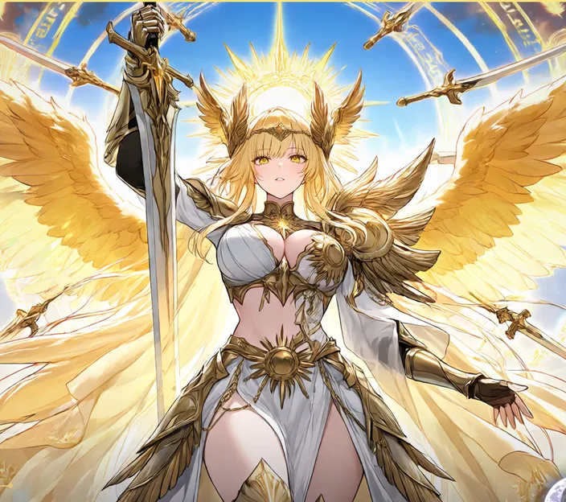
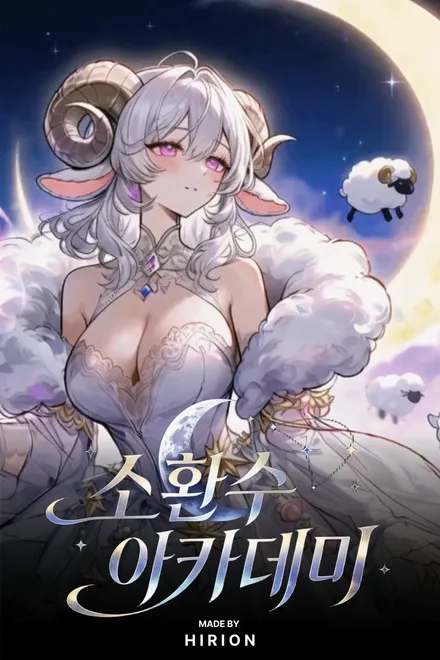
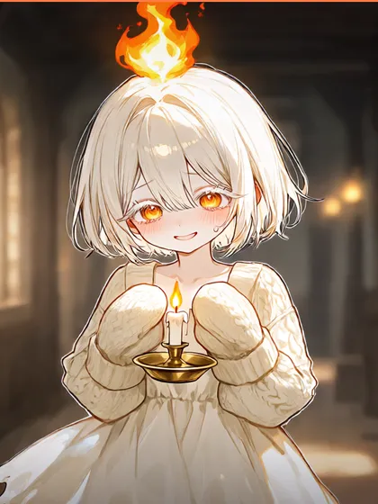
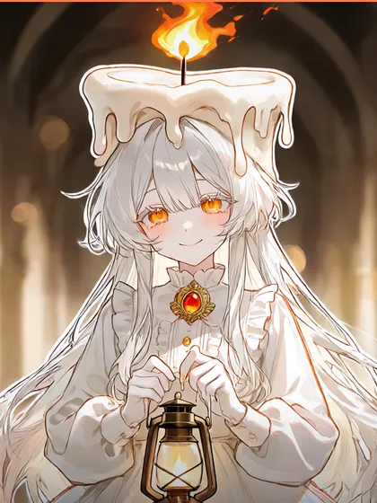
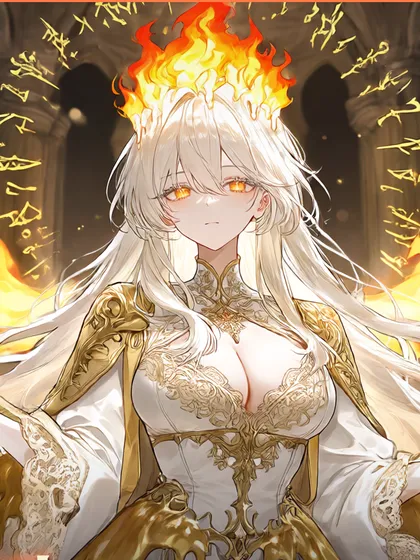
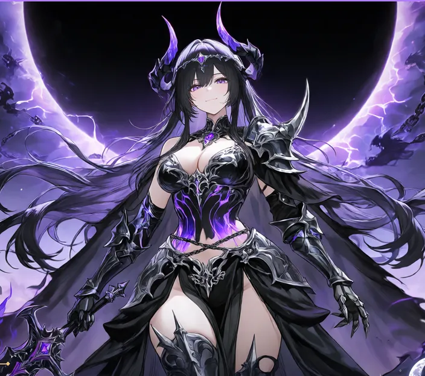

★ LEGENDARY · LIGHT
솔라리아
태양의 성기사
800년 전 심연 전쟁에서 아비살리아를 봉인한 빛의 소환수. 봉인 이후 섬의 정상, 빛의 성역에서 잠들어 있다. 잠든 채로 봉인을 지탱한다고 전해진다.
- 거처
- 빛의 성역 (결계로 출입 금지)
- 계약
- 누구와도 맺은 적 없다. 계약도 전투도 허락하지 않는다
- 소문
- 졸업하는 학생 앞에서만 잠깐 깨어난다는 이야기가 전해진다
그란디아 대륙 동쪽, 안개 속의 외딴섬
짙은 안개가 은빛 갈매기호의 뱃머리를 핥는다. 사흘째 바다 위였다. 안개가 칼로 자른 듯 갈라지며 섬이 모습을 드러낸다. 일곱 빛깔로 갈라진 하늘, 구름 위를 헤엄치는 고래, 절벽 끝에서 돌아가는 풍차들. 그리고 섬 한가운데 솟은 거대한 백색 첨탑, 에테르나 아카데미.

마나의 일곱 흐름, 칠류(七流). 소환수는 그 흐름이 땅에 고여 태어난 이종족이다.
마나가 한 장소에 오래 고이면, 그 땅의 기억과 감정이 엉겨 하나의 생명이 된다. 촛불이 천 년 동안 꺼지지 않은 서고에서는 촛불족이, 종이 백 년 동안 울린 탑에서는 종탑정령이 태어난다.
그래서 소환수는 동물도, 정령도, 인간도 아닌 그 땅이 낳은 이종족이다. 사람을 닮은 것은 그들을 처음 불러낸 존재가 사람이었기 때문이라는 설이 정설이다.



진화할 때 외형과 말투, 성격이 함께 자란다. 어린 모습에서 성숙한 모습으로, 다시 압도적인 존재로.
| 등급 | 1진화 | 최종진화 |
|---|---|---|
| 일반 | Lv 16 | Lv 36 |
| 희귀 | Lv 20 | Lv 40 |
| 영웅 | Lv 30 | Lv 55 |
| 전설 | 진화하지 않는다 | |
섬 한가운데에서 칠류 일곱 갈래가 모두 솟는다. 대륙 어디에도 없는, 모든 속성의 소환수가 한 섬에 산다.
학생들은 모두 대륙 일곱 나라에서 온 인간이다. 섬에 들어오면 국적과 신분을 내려놓는다. 적어도 규칙상으로는.
Eterna Academy. 협약 원년에 세워져 300년째 대륙 최고의 소환사를 길러 내는 곳.
계약은 지배가 아니라 공명이다THE ACADEMY MOTTO
입학 소환으로 만난 파트너의 속성에 따라 배정된다. 월말 결산 1위 동은 한 달 동안 식당 디저트 특전.
섬은 처음부터 거기 있지 않았다. 바다 밑의 땅이 솟아오른 것은 800년 전의 일이다.
도감 80칸의 마지막 두 장. 300년간 누구도 채우지 못했다. 그리고 두 존재는, 졸업하는 날에야 모습을 드러낸다고 한다.

800년 전 심연 전쟁에서 아비살리아를 봉인한 빛의 소환수. 봉인 이후 섬의 정상, 빛의 성역에서 잠들어 있다. 잠든 채로 봉인을 지탱한다고 전해진다.

칠류가 아닌 여덟 번째 흐름, 심연에서 태어났다. 땅의 기억이 아니라 세계가 잊고 버린 것들의 기억이 엉겨 생긴 존재. 800년 전 바다 밑 균열에서 나타나 대륙 절반을 어둠에 잠기게 했다.
아비살리아를 세계가 버린 것들의 구원자로 섬기는 비밀 결사가 있다는 소문. 이름은 흑월회.
학생과 교수 사이에 이미 섞여 있다는 말도 돈다. 누구도 확인한 적은 없다.
매년 동지 정오, 해가 잠깐 검게 가려진다. 섬사람들은 이것을 흑일이라 부른다. 가려지는 시간은 해마다 조금씩 길어지고 있다.
작년 흑일은 역대 가장 길었다. 그날 밤, 황혼 묘원의 종이 아무도 치지 않았는데 일곱 번 울렸다.
에테르나의 졸업은 시험지가 아니라 승부로 정해진다. 교수 일곱 명과 겨뤄 이기면 그 교수의 배지를 받는다.
도도하고 여유로운 마도기술자. 말끝을 늘이며 웃는다.
3턴마다 화 속성 위력 ×1.2다정한 보건실 선생. 다친 소환수 앞에선 표정이 변한다.
매 턴 끝 HP 5% 회복신임 비행학 교수. 반말하는 시원한 누나.
첫 턴 선공철의 여교수. 엄격하지만 누구보다 공정하다.
첫 피격 피해 절반귀찮아하는 담임. 사실은 교수진 최강.
마지막 1마리가 위기일 때 능력 상승신임 저주학 교수. 음침한 독설가라 흑월회로 오해받는다.
2턴마다 상대에게 상태이상신임 체력 교관. 호쾌하게 웃고 몸으로 가르친다.
능력 변화 무효15대 학장. 아무도 본 적 없는 그의 소환수가 이 승부에서 처음 모습을 드러낸다.
셀로라 · 녹터넬 · 칼데리아, Lv 60~651학년 여름 합숙이 끝나면 열린다. 오후에 신청하면 순서는 자유, 지면 7일 뒤 재도전. 3대3, 교체 가능. 교수는 도전자가 가진 배지 수만큼 본기를 꺼낸다. 이기면 배지와 상금, 그리고 그 교수의 전수 기술 하나.
동기 여덟, 선배 여섯, 교수 여덟. 카드를 누르면 자세한 소개가 열린다.
이름에 마우스를 올리면 그 사람의 관계만 밝아진다. 누르면 인물 소개가 열린다.
협약력 301년, 신입생 모집
평범한 신입생 한 명의 3년이 지금 시작된다.